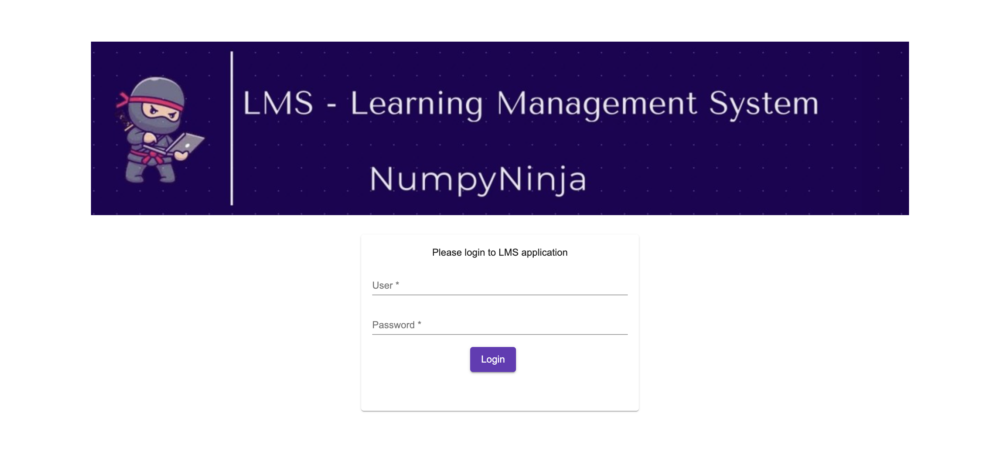
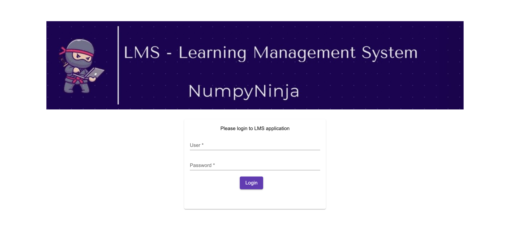

-
Batch Page Navigation
5:02:46 PM / 00:00:14:977 Pass
Batch Page Navigation
10.28.2024 5:02:46 PM 10.28.2024 5:03:01 PM 00:00:14:977 · #test-id=1PassVerify Admin Navigate to Batch page successfullyGiven Admin successfully Logged on to LMS PortalWhen Admin Clicks on the Batch menu from the headerThen Admin should be in the Manage Batch Page -
Batch Page Validation
5:03:01 PM / 00:01:41:260 Pass
Batch Page Validation
10.28.2024 5:03:01 PM 10.28.2024 5:04:42 PM 00:01:41:260 · #test-id=8PassValidate "Title" in Batch PageGiven Admin is on the Dashboard page after LoginWhen Admin Clicks on the Batch menu from headerThen Admin should see the "LMS-Learning Management System" TitlePassValidate "heading" in the Batch PageGiven Admin is on the Dashboard page after LoginWhen Admin Clicks on the Batch menu from headerThen Admin should see the "Manage Batch" HeadingPassValidate disabled "Delete Icon" under the header in the Batch PageGiven Admin is on the Dashboard page after LoginWhen Admin Clicks on the Batch menu from headerThen Admin should see the disabled "Delete Icon" under the headerPassValidate pagination in the Batch PageGiven Admin is on the Dashboard page after LoginWhen Admin Clicks on the Batch menu from headerThen Admin should see the enabled pagination controls under the data tablePassValidate edit icon in each data rowsGiven Admin is on the Dashboard page after LoginWhen Admin Clicks on the Batch menu from headerThen Admin should see the edit icon in each rowPassvalidate delete icon in each data rowsGiven Admin is on the Dashboard page after LoginWhen Admin Clicks on the Batch menu from headerThen Admin should see the delete icon in each rowPassvalidate checkbox in each data rowsGiven Admin is on the Dashboard page after LoginWhen Admin Clicks on the Batch menu from headerThen Admin should see the checkbox in each rowPassValidate Datatable headersGiven Admin is on the Dashboard page after LoginWhen Admin Clicks on the Batch menu from headerThen Admin should see the datatable headers Batch name, Batch Description,Batch Status, No Of classes, Program Name, Edit/DeletePassValidate "Checkbox" in the Datatable header rowGiven Admin is on the Dashboard page after LoginWhen Admin Clicks on the Batch menu from headerThen Admin should see the checkbox in the datatable header rowPassValidate "sort icon" next to all the datatable headerGiven Admin is on the Dashboard page after LoginWhen Admin Clicks on the Batch menu from headerThen Admin should see the sort icon next to all Datatable headers -
Add New Batch
5:04:42 PM / 00:00:18:393 Pass
Add New Batch
10.28.2024 5:04:42 PM 10.28.2024 5:05:01 PM 00:00:18:393 · #test-id=69PassVerify sub menu displayed in batch menu barGiven Admin is on the Batch pageWhen Admin clicks "Batch" on the navigation barThen Admin should see sub menu in menu bar as "Add New Batch"PassValidate Admin able to click on the Add new Batch OptionGiven Admin is on the Batch pageWhen Admin clicks on "Add New batch" under the "batch" menu barThen Admin should see the Batch Details pop up window -
Add New Batch details pop up
5:05:01 PM / 00:05:07:043 Fail
Add New Batch details pop up
10.28.2024 5:05:01 PM 10.28.2024 5:10:08 PM 00:05:07:043 · #test-id=82PassValidate all the fields exist in pop upGiven Admin is on the Add new batch pop upWhen Admin checks all the fields are enabledThen The pop up should include the fields Batch Name,Number of classes and Description as text box, Program Name as drop down Status as radio buttonPassValidate batchname prefix selected program nameGiven Admin is on the Add new batch pop upWhen Admin selects program name present in the dropdownThen Admin should see selected program name in the batch name prefix boxPassValidate batch name suffix box should accept only numbersGiven Admin is on the Add new batch pop upWhen Admin enters alphabets in batch name suffix boxThen Admin should get error message below the text box of respective fieldPassValidate batch name prefix box is not editableGiven Admin is on the Add new batch pop upWhen Admin enters alphabets in batch name prefix boxThen Admin should see empty text boxFailValidate input data only for mandatory fieldsGiven Admin is on the Add new batch pop upWhen Admin enters the data only to the mandatory fiields and clicks save buttonThen Admin should get a successful messagehooks.appHooks.teardown(io.cucumber.java.Scenario)errorscreen Passvalidate input data missing for mandatory fieldsGiven Admin is on the Add new batch pop upWhen Admin leaves blank one of the mandatory fieldsThen Admin should get a error message on the respective mandatory fieldFailvalidate save button in Batch details pop upGiven Admin is on the Add new batch pop upWhen Admin enters the valid data to all the mandatory fields and click save button in batch detailsThen Admin should get a succesesful messagehooks.appHooks.teardown(io.cucumber.java.Scenario)errorscreenFailvalidate cancel button in Batch details pop upGiven Admin is on the Add new batch pop upWhen Admin enters the valid data to all the mandatory fields and click cancel button in Batch detailsThen Admin can see the batch details popup closes without creating any batchStep skippedhooks.appHooks.teardown(io.cucumber.java.Scenario)errorscreen
Passvalidate input data missing for mandatory fieldsGiven Admin is on the Add new batch pop upWhen Admin leaves blank one of the mandatory fieldsThen Admin should get a error message on the respective mandatory fieldFailvalidate save button in Batch details pop upGiven Admin is on the Add new batch pop upWhen Admin enters the valid data to all the mandatory fields and click save button in batch detailsThen Admin should get a succesesful messagehooks.appHooks.teardown(io.cucumber.java.Scenario)errorscreenFailvalidate cancel button in Batch details pop upGiven Admin is on the Add new batch pop upWhen Admin enters the valid data to all the mandatory fields and click cancel button in Batch detailsThen Admin can see the batch details popup closes without creating any batchStep skippedhooks.appHooks.teardown(io.cucumber.java.Scenario)errorscreen Passvalidate close icon on the batch details pop upGiven Admin is on the Add new batch pop upWhen Admin clicks on the close iconThen batch details pop up closes
Passvalidate close icon on the batch details pop upGiven Admin is on the Add new batch pop upWhen Admin clicks on the close iconThen batch details pop up closes -
Admin is on the batch page
5:10:08 PM / 00:00:26:712 Pass
Admin is on the batch page
10.28.2024 5:10:08 PM 10.28.2024 5:10:35 PM 00:00:26:712 · #test-id=137PassValidate Edit icon feature in any rowGiven Admin is on the batch pageWhen Admin clicks the edit iconThen Admin should see the Batch details pop up windowPassValidate program name value is disabled to editGiven Admin is on the batch pageWhen Admin clicks the edit iconThen Admin should see Program name value field is disabled for editingPassValidate batch name value is disabled to editGiven Admin is on the batch pageWhen Admin clicks the edit iconThen Admin should see batch name value field is disabled for editing -
Edit batch validation
5:10:35 PM / 00:00:28:339 Pass
Edit batch validation
10.28.2024 5:10:35 PM 10.28.2024 5:11:03 PM 00:00:28:339 · #test-id=156PassValidate editing description and No. of classes fields with invalid data in the pop upGiven Admin is on the Batch Details PageWhen Admin Updates any fields with invalid data and click save buttonThen Admin should get a error message under the respective fieldPassvalidate save button in Batch details pop upGiven Admin is on the Batch Details PageWhen Admin enters the valid data to all the mandatory fields and click save buttonThen Admin should get a succesesful message for editing the batchPassvalidate cancel button in Batch details pop upGiven Admin is on the Batch Details PageWhen Admin enters the valid data to all the mandatory fields and click cancel buttonThen Admin can see the batch details popup closes without editing the batch -
Delete batch validation
5:11:03 PM / 00:00:37:998 Pass
Delete batch validation
10.28.2024 5:11:03 PM 10.28.2024 5:11:41 PM 00:00:37:998 · #test-id=175Passvalidate delete Icon on any row in delete batchGiven Admin is on the batch page for DeleteWhen Admin clicks the delete Icon on any of the rowThen Admin should see the confirm alert box with yes and no buttonPassValidate yes button on the confirm alert box in delete batchGiven Admin is on the batch page for DeleteWhen Admin clicks on the delete icon and click yes butttonThen Admin should see the successfull message and the batch should be deletedPassvalidate no button on the confirm alert box in delete batchGiven Admin is on the batch page for DeleteWhen Admin clicks on the delete icon and click no butttonThen Admin should see the alert box closed and the batch is not deletedPassvalidate close Icon on the alert box in delete batchGiven Admin is on the batch page for DeleteWhen Admin clicks on the close icon on alert boxThen Admin should see the alert box closed -
Delete multiple batches with check box
5:11:41 PM / 00:00:20:957 Pass
Delete multiple batches with check box
10.28.2024 5:11:41 PM 10.28.2024 5:12:02 PM 00:00:20:957 · #test-id=200PassValidate single row delete with checkboxGiven Admin is on the batch page for delete multipleWhen Admin clicks on the delete icon under the Manage batch header for single rowThen The respective row in the table should be deletedPassValidate multiple row delete with checkboxGiven Admin is on the batch page for delete multipleWhen Admin clicks on the delete icon under the Manage batch header for multiple rowThen The respective row in the table should be deleted -
Pagination
5:12:02 PM / 00:05:15:664 Pass
Pagination
10.28.2024 5:12:02 PM 10.28.2024 5:17:18 PM 00:05:15:664 · #test-id=213PassValidate next page linkGiven Admin is on the batch page for PaginationWhen Admin clicks next page link on the data tableThen Admin should see the Next enabled linkPassvalidate last page linkGiven Admin is on the batch page for PaginationWhen Admin clicks last page link on the data tableThen Admin should see the last page link with next page link disabled on the tablePassvalidate the backward page linkGiven Admin is on the batch page for PaginationWhen Admin clicks backward page link on the data tableThen Admin should see the previous page on the tablePassvalidate the first page linkGiven Admin is on the batch page for PaginationWhen Admin clicks first page link on the data tableThen Admin should see the very first page on the data table -
Search Text box validation
5:17:18 PM / 00:00:10:811 Fail
Search Text box validation
10.28.2024 5:17:18 PM 10.28.2024 5:17:29 PM 00:00:10:811 · #test-id=238Failvalidate serach box functionalityGiven Admin is on the batch page for searchWhen Admin enters the batch name in the serach text boxThen Admin should see the filtered batches in the data tablehooks.appHooks.teardown(io.cucumber.java.Scenario)errorscreen -
LogOut of the application from the batch page
5:17:29 PM / 00:00:09:353 Pass
LogOut of the application from the batch page
10.28.2024 5:17:29 PM 10.28.2024 5:17:38 PM 00:00:09:353 · #test-id=245PassValidate logout option in the header is visible and enabled from the batch pageGiven Admin is on the batch page for logoutWhen Admin clicks on the logout buttonThen Admin should see the Login screen Page
-
org.openqa.selenium.NoSuchElementException
1 tests
org.openqa.selenium.NoSuchElementException
1 failedStatus Timestamp TestName Fail 17:09:26 PM When Admin enters the valid data to all the mandatory fields and click cancel button in Batch details Add New Batch details pop up.validate cancel button in Batch details pop up.When Admin enters the valid data to all the mandatory fields and click cancel button in Batch details -
org.openqa.selenium.TimeoutException
2 tests
org.openqa.selenium.TimeoutException
2 failedStatus Timestamp TestName Fail 17:06:19 PM Then Admin should get a successful message Add New Batch details pop up.Validate input data only for mandatory fields.Then Admin should get a successful messageFail 17:08:14 PM Then Admin should get a succesesful message Add New Batch details pop up.validate save button in Batch details pop up.Then Admin should get a succesesful message -
java.lang.AssertionError
1 tests
java.lang.AssertionError
1 failedStatus Timestamp TestName Fail 17:17:28 PM Then Admin should see the filtered batches in the data table Search Text box validation.validate serach box functionality.Then Admin should see the filtered batches in the data table
Started
Oct 28, 2024 05:02:45 PM
Ended
Oct 28, 2024 05:17:38 PM
Features Passed
9
Features Failed
2
Features
Scenarios
Steps
Timeline